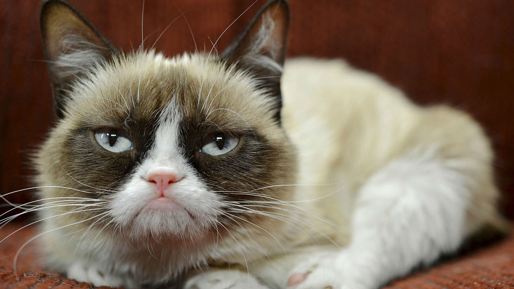

Grumpy cat
Grumpy Cat, une célébrité féline née sur les réseaux sociaux, a conquis le cœur du monde entier avec son expression faciale constamment boudeuse. Son visage unique, marqué par une moue perpétuelle, a donné naissance à un phénomène Internet empreint d'humour et de sarcasme.
Grumpy Cat, de son vrai nom Tardar Sauce, a su transformer son air grognon en une source infinie de rires et de mèmes. Son regard désapprobateur a fait d'elle une icône de l'attitude détachée et nonchalante. Les internautes ont rapidement adopté son image pour exprimer toutes sortes d'émotions sarcastiques, de la désapprobation ironique à la frustration comique.
Au-delà de sa célébrité en ligne, Grumpy Cat est devenue une figure emblématique de la culture pop, apparaissant dans des émissions de télévision, des livres, et même sur des produits dérivés. Son charme grincheux a réussi à captiver un public mondial, prouvant que parfois, même les chats grognons peuvent apporter une dose bienvenue de légèreté et de rire à nos vies. Bien que Grumpy Cat ne soit plus parmi nous, son héritage persiste, rappelant à tous que parfois, un peu de mauvaise humeur peut être la clé d'un sourire éclatant.
 Chat noir
Chat noir